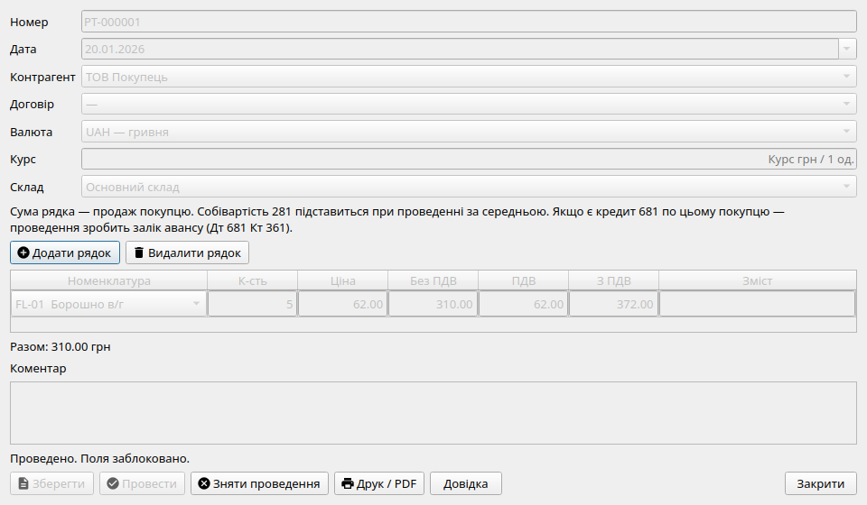
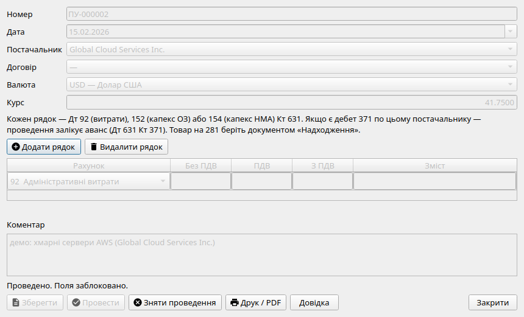
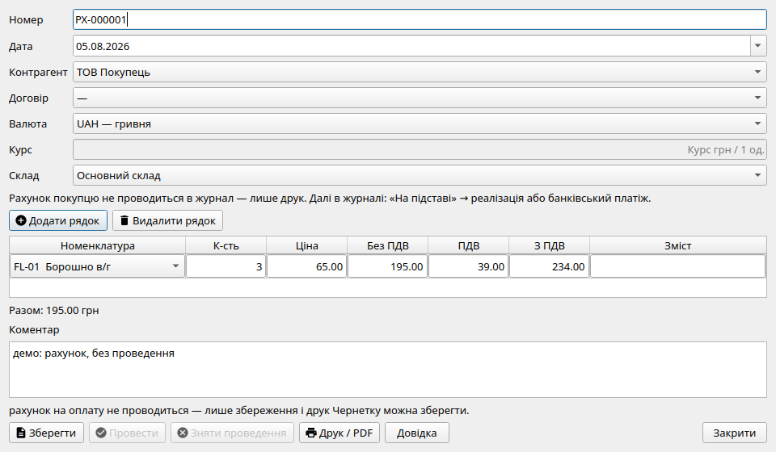
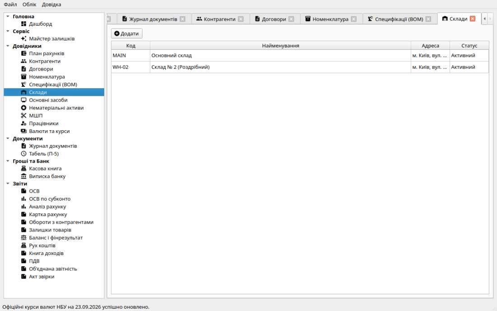
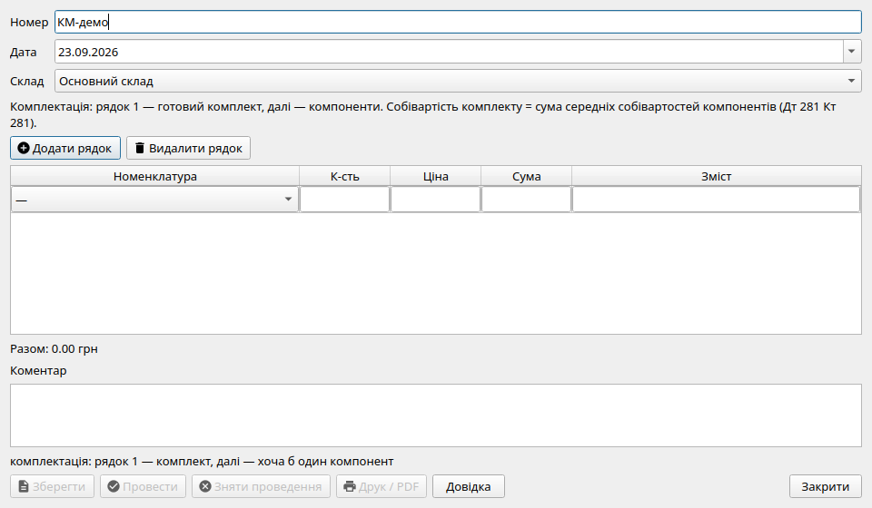

Облік товарів, робіт та послуг
Система «Фінік» забезпечує повний контур управління товарними запасами та
взаєморозрахунками за придбані й реалізовані товари, роботи і послуги.
Надходження товарів від постачальника
Документ «Надходження» фіксує отримання товарно-матеріальних
цінностей на баланс підприємства:
-
Таблична частина: номенклатурна позиція, одиниця виміру,
кількість у міліодиницях (до 3 знаків після коми), ціна придбання в
копійках та сума.
-
Бухгалтерські проводки: формується запис Дт 281 Кт 631 (на
суму поставки без ПДВ для платників або на повну суму для неплатників).
-
Автоматичний залік авансу: якщо постачальнику раніше було
перераховано передоплату (дебетове сальдо на субрахунку 371), рушій
проведення автоматично додає проводку Дт 631 Кт 371 на суму
закритого авансу.
-
Складський облік: оприбуткована кількість та вартість додаються
до залишків на складі й автоматично оновлюють середньозважену ціну
списання.
Реалізація товарів покупцю
Документ «Реалізація» оформлює відвантаження продукції чи товарів
покупцеві:
- Рядки документа заповнюються товарами за продажною ціною.
-
При натисканні кнопки «Провести» система одночасно здійснює
комплексний розрахунок:
-
Визнання виручки: Дт 361 Кт 701 на загальну вартість
продажу.
-
Списання собівартості: Дт 902 Кт 281 за поточною
середньозваженою вартістю товару на складі на момент проведення.
-
Залік попередньої оплати: якщо покупець уже сплатив кошти
авансом (кредитове сальдо на субрахунку 681), система додає залік
Дт 681 Кт 361.
-
Суворий контроль залишків: списання в «мінус» заблоковано! Якщо
на складі фізично не вистачає кількості, проведення переривається з
повідомленням про дефіцит.

Форма реалізації товарів: зверху — контрагент, дата, номер; у таблиці —
номенклатура, кількість та ціна продажу. Собівартість рахується
автоматично.
Реалізація послуг покупцям
Якщо ваше підприємство надає консультаційні, юридичні, транспортні чи інші
послуги, де відсутній складський рух матеріальних цінностей,
використовується документ «Реалізація послуг»:
-
Вказується покупець, зміст послуги та договірна вартість. Зазначення
номенклатури необов'язкове.
-
Формується проводка Дт 361 Кт 703 («Дохід від реалізації робіт і
послуг»). Рахунок 281 і собівартість 902 не зачіпаються.
-
Якщо покупець перерахував аванс, автоматично додається залік
Дт 681 Кт 361.
- Друкована форма: двосторонній Акт надання послуг.
Надходження послуг від сторонніх організацій
Для обліку витрат на оренду офісу чи складу, комунальні послуги, інтернет,
зв'язок або субпідрядні роботи призначено документ
«Надходження послуг»:
-
Кожен рядок містить рахунок витрат:
-
92 — адміністративні та загальногосподарські витрати
поточного місяця;
-
152 — капітальні інвестиції в основні засоби (наприклад,
доставка чи монтаж обладнання);
-
154 — капітальні інвестиції в нематеріальні активи
(наприклад, розробка або доопрацювання ПЗ).
- Формуються проводки: Дт 92/152/154 Кт 631.
-
При наявності раніше сплаченого авансу додається залік
Дт 631 Кт 371.
- Друкована форма: Акт отриманих послуг.

Діалог надходження послуг: вибір рахунку дебету (92, 152 або 154) та
кредиту 631 без складської кількості.
Рахунок на оплату покупцю
Документ «Рахунок на оплату» є допоміжною комерційною формою:
-
Він зберігається в базі даних, має унікальний номер і дату, але
не проводиться в журнал проводок і не впливає на фінансовий
результат чи дебіторську заборгованість.
- Не блокує регламентне закриття звітного періоду.
-
Дозволяє надрукувати акуратний рахунок з вашими банківськими реквізитами
(IBAN, МФО, ЄДРПОУ).
-
Після отримання оплати або відвантаження товару скористайтеся кнопкою
«На підставі» для швидкого формування Банківського платежу чи
Реалізації.

Рахунок на оплату покупцю: кнопка «Провести» неактивна, оскільки
документ призначений виключно для збереження та друку.
Довідник «Склади» та багатоскладський облік
Система «Фінік» підтримує повноцінний кількісно-сумовий облік запасів у
розрізі необмеженої кількості місць зберігання (складів, торгових точок,
виробничих цехів, магазинів):
-
Реквізити складу: унікальний код (наприклад,
WH-01),
коротка та повна назва, фактична адреса, матеріально відповідальна особа
(МВО) та статус активності.
-
Основний склад: за замовчуванням у системі створено склад
«Основний склад» (WH-01).
-
Незалежний розрахунок собівартості: середня собівартість одиниці
товару (рахунок 281) розраховується окремо для кожного складу.
-
Звітність у розрізі складів: у розділі
«Склад (залишки)» доступний фільтр за конкретним складом або
консолідований звіт «Усі склади» з експортом у PDF та CSV.

Довідник складів: перелік складських приміщень підприємства, керування
статусом активності та реквізитами місць зберігання.
Переміщення товарів між складами
Для внутрішнього переміщення товарно-матеріальних цінностей між
підрозділами чи філіями компанії призначено документ
«Переміщення товарів»:
-
Склад-відправник та Склад-одержувач: обираються у верхній частині
форми. Переміщення можливе лише між різними складами.
-
Таблична частина: вибір номенклатури та кількості для
переміщення.
-
Бухгалтерська проводка: Дт 281 (Склад-одержувач)
Кт 281 (Склад-відправник) на суму облікової собівартості.
-
Контроль дефіциту: списання зі складу-відправника суворо
перевіряє наявність залишку на складі вибуття на момент проведення.
Комплектація та розукомплектація
Окремо від виробничих специфікацій (рахунки 23/26) для збирання наборів на складі
товарів (281):
-
«Комплектація номенклатури»: рядок 1 —
готовий комплект, наступні — компоненти. Собівартість комплекту = сума
середніх собівартостей списаних компонентів. Проводка
Дт 281 Кт 281.
-
«Розукомплектація номенклатури»:
рядок 1 — комплект, далі — компоненти, на які розподіляється
собівартість комплекту (за ціною×кількість або пропорційно кількості).
-
Обидва документи не використовують рахунки 231/26 і не пов’язані з
випуском продукції.

Форма комплектації: рядок 1 — комплект, далі компоненти; проводка Дт
281 Кт 281.
Договори контрагентів (Субконто 2)
Для деталізації розрахунків за контрактами та замовленнями реалізовано
аналітичний розріз «Договори»:
-
Договір прив'язується до конкретного контрагента, має номер, дату
укладення, назву та вид (з покупцем, з постачальником або інший).
-
Довідник «Договори» у бічному меню (розділ «Довідники») —
створення, редагування та вимкнення договорів.
-
У формах документів купівлі, продажу, рахунків та замовлень поле
«Договір» автоматично фільтрується відповідно до обраного покупця
чи постачальника.
-
Дозволяє вести паралельний взаємооблік за різними контрактами з одним і
тим самим партнером.
Замовлення покупців та Замовлення постачальникам
Для планування продажів та закупівель застосовуються документи
«Замовлення покупця» та «Замовлення постачальнику»:
-
Призначення: попередня реєстрація намірів купівлі-продажу без
формування бухгалтерських проводок у Головну книгу.
-
Статуси замовлення: у формі документа — Чернетка, Підтверджено,
Виконано, Скасовано.
-
Друк: «Замовлення покупця» та «Замовлення постачальнику» (не
рахунок і не накладна).
-
Введення на підставі: на підставі підтвердженого замовлення в
один клік генерується накладна на надходження чи реалізацію або рахунок
на оплату.
Повернення, списання та інвентаризація
| Господарська операція |
Бухгалтерські проводки |
Правила та особливості |
| Переміщення між складами |
Дт 281/Склад2 Кт 281/Склад1 |
Переміщення запасів між матеріально відповідальними особами та
складами за поточною середньозваженою собівартістю.
|
| Повернення від покупця |
1) Дт 701 Кт 361 (сторно доходу)
2) Дт 281 Кт 902 (повернення на склад)
|
Товар повертається на склад за поточною середньозваженою собівартістю
(або останньою ціною вибуття, якщо склад спорожнів). Зменшує дохід у
Книзі доходів.
|
| Повернення постачальнику |
Дт 631 Кт 281 |
Повернення неякісного товару або надлишків постачальнику. Списується
за середньозваженою собівартістю з рахунку 281.
|
| Списання товарів |
Дт 92 Кт 281 |
Вибуття запасів унаслідок псування, закінчення терміну придатності чи
використання для власних потреб компанії. Друкується Акт списання.
|
| Інвентаризація запасів |
• Надлишок: Дт 281 Кт 71
• Нестача: Дт 92 Кт 281
|
У формі вказується фактично перерахована кількість. Система сама
зіставляє її з обліковою кількістю на складі та створює коригувальні
проводки.
|